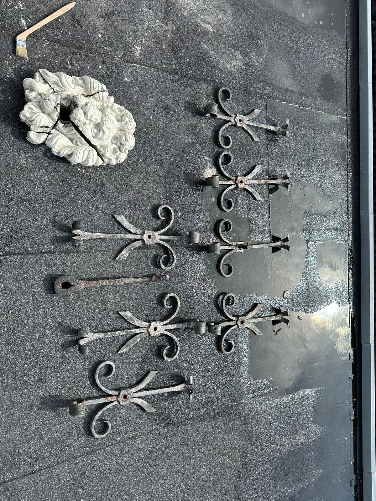
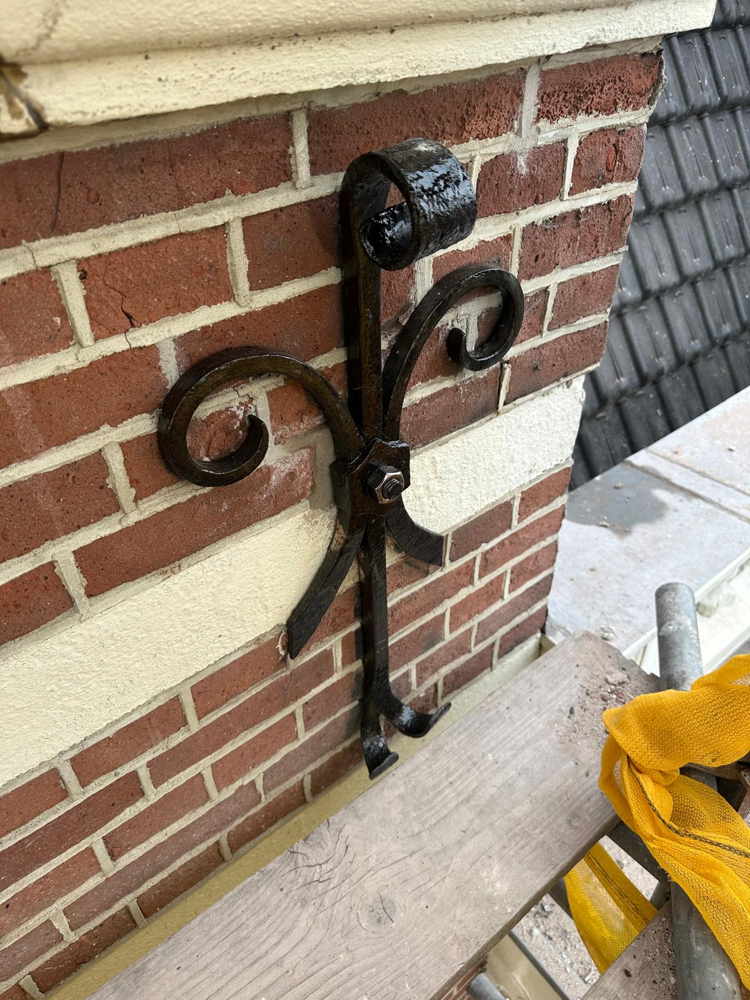
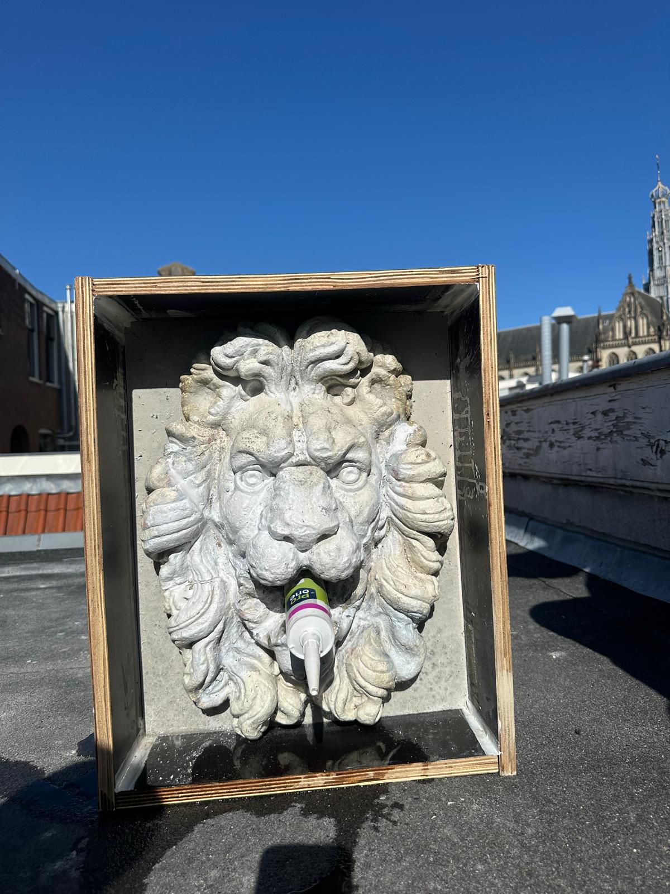
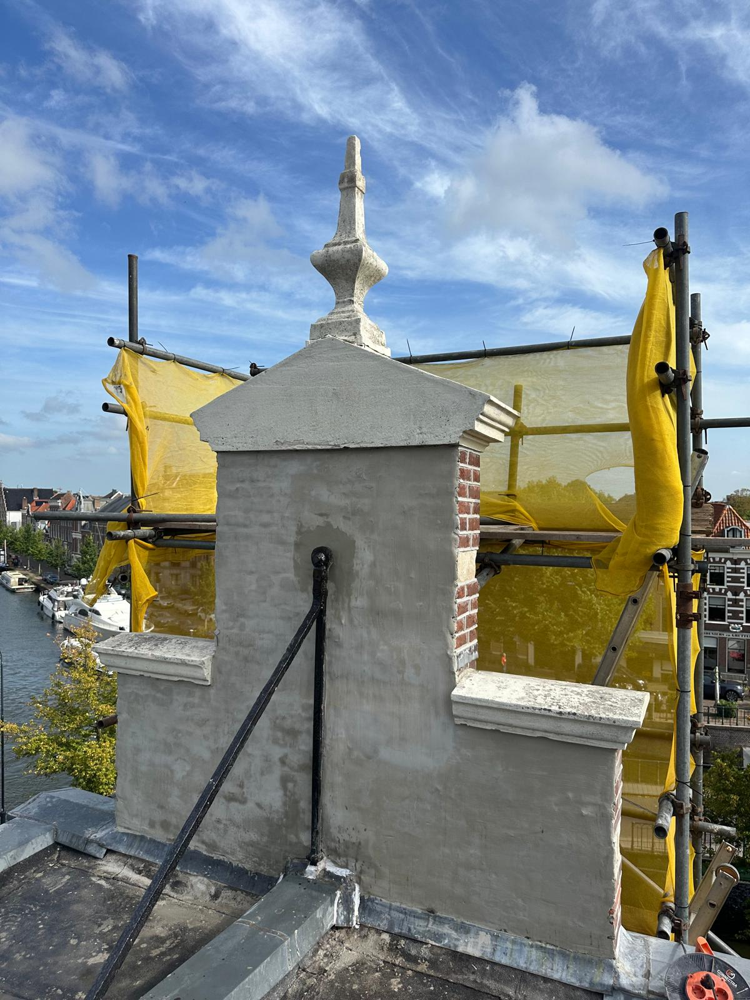
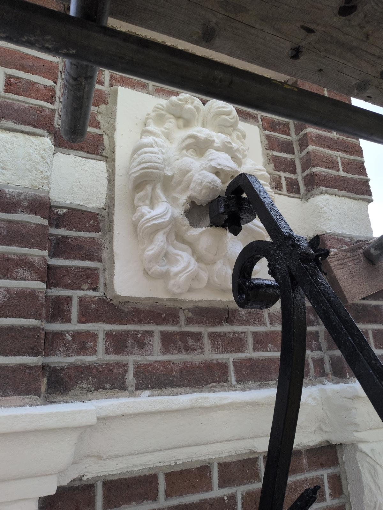
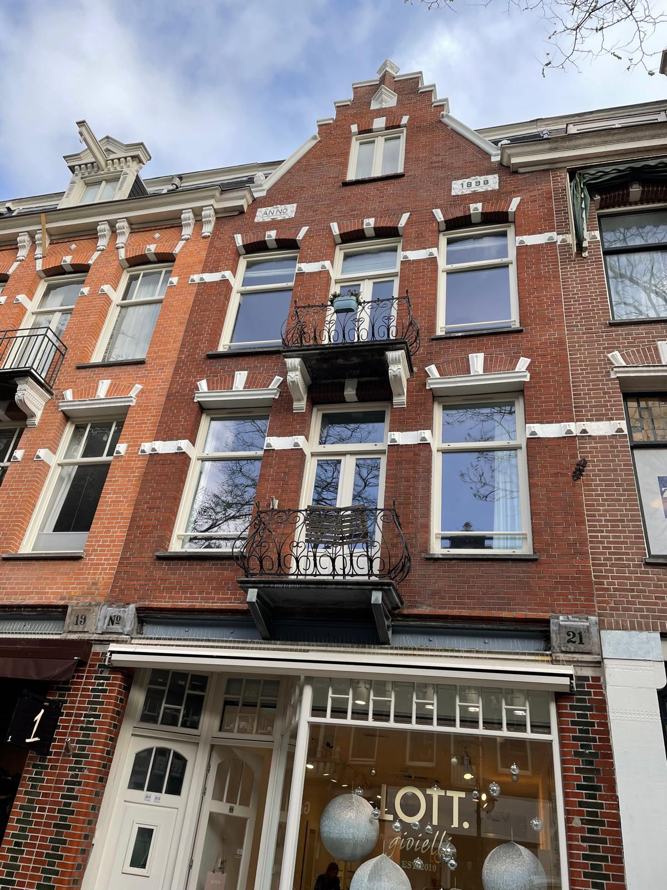
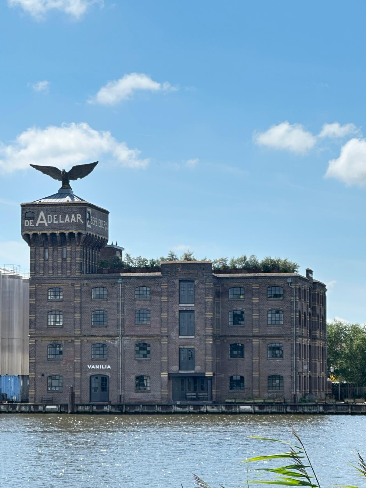

Onze Restauraties
Oog voor detail in de praktijk








Authentieke beelden en historische details worden door de hand van de meester in oude glorie hersteld. Precisie en passie voor het verleden.
Eigenaar Johan van der Meer heeft zich door de jaren heen ontpopt tot een geliefd en gerespecteerd restaurateur van historische kunstwerken en geveldetails. Het herstellen van ornamenten vereist niet alleen technisch inzicht, maar vooral een artistiek oog en respect voor de originele architectuur.
Oog voor detail in de praktijk







© 2026 Van der Meer Dienstengroep B.V.